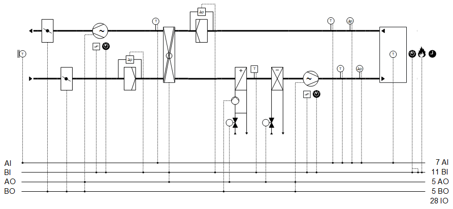
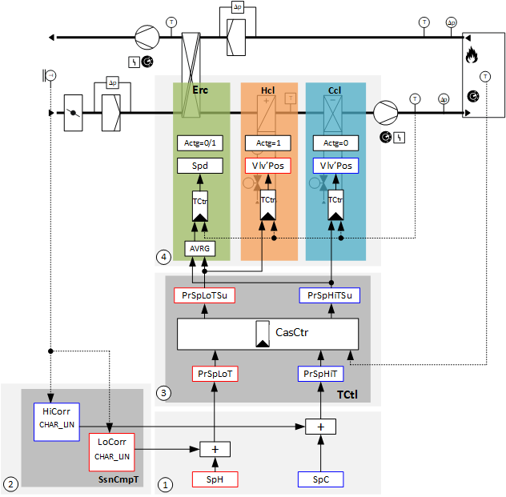
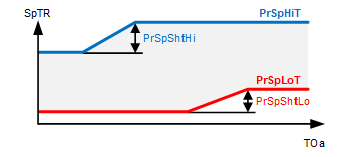
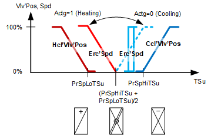

[Ahu21] 空气处理机组、温度串级控制、压力控制
工厂示例 Ahu21 具有速度控制风扇、冷冻水冷却盘管、热水加热盘管、带旋转热交换器的能量回收以及截止风门。
Functions
- Temperature control with room/supply air temperature cascade control
- Pressure control
Plant diagram

Components
- Fans, speed-controlled
- Shutoff dampers
- Energy recovery with rotary heat exchanger
- Hot water heating coil
- Chilled water cooling coil
设备示例的组件和功能：
成分 | 功能 | BACnet object |
|---|---|---|
| Fire detection contact 关闭工厂。 | [BI]Fire detection contact |
| Operating mode switch 将工厂切换至：Auto | Off | On | [MI]Operating mode switch |
| Manual operating mode selection 将工厂切换至：Auto | Off | On | [MCnfVal]Manual operating mode selection |
| Scheduler program 将工厂切换至：Off | On | [MSchedule]Scheduler |
| Present operating mode 报告当前操作模式：关 |在 | [MCalcVal]Present operating mode |
| Reason for present operating mode 报告当前操作模式的原因：异常 |工作模式切换 |手动操作模式选择|调度程序|开关动作操作 | [MCalcVal]Reason for present operating mode |
| Temperature control basic setpoints (1) 室温上限和下限设定点 Function diagram for temperature control basic setpoints (1) | [ACnfVal]Setpoint for cooling [ACnfVal]Setpoint for heating |
| Seasonal temperature compensation (2) 根据室外温度校正高和低室温设定点。 | [BCalcVal]Seasonal temperature compensation |
| Temperature cascade control (3) （房间/supply空气温度级联） 根据室外温度计算高和低送风设定点。 |
> [ACalcVal]Present setpoint high for room temperature > [ACalcVal]Present setpoint low for room temperature > [ACalcVal]Present setpoint high for supply air temperature > [ACalcVal]Present setpoint low for supply air temperature > [ACnfVal]Gain > [ICnfVal]Integral action time Tn > [ACnfVal]Minimum supply air temperature setpoint > [ACnfVal]Maximum supply air temperature setpoint |
Room temperature sensor 测量室温。 | [AI]Room temperature | |
| Exhaust air differential pressure sensor 测量管道与环境之间的压差。 | [AI]Extract air pressure （位于 |
| Supply air differential pressure sensor 测量管道与环境之间的压差。 | [AI]Supply air pressure （位于 |
| Extract air temperature sensor 测量排气温度。 | [AI]Extract air temperature |
| Supply air temperature sensor 测量送风温度。 | [AI]Supply air temperature |
| Supply air fan |
|
压力控制器 控制供气压力。 | > [控制器]Pressure controller
| |
供气压力设定值 确定供气压力的设定值。 | > [ACnfVal]Setpoint supply air pressure
| |
命令 根据需要打开 /off 风扇。 | > [BO]Command | |
速度 将风扇速度控制在 0 到 100 [%] 之间。 | > [AO]Speed | |
维护开关 关闭风扇和设备。 风扇输出以高优先级 (Prio 2) 被本地阻止。 | > [BI]Maintenance switch | |
故障信息 故障消息，例如来自外部电机控制（变速驱动器）。 关闭风扇和设备。 | > [BI]Fault | |
| Cooling coil |
|
向冷却分配报告冷冻水需求。 | > [BCalcVal]Chilled water demand | |
Valve |
| |
温度控制器 控制送风温度。 | > [控制器]Temperature controller | |
阀门位置 控制阀门位置：0…100 [%] | > [AO] 位置 | |
| Heating coil
|
|
向热量分配报告热水需求。 | > [BCalcVal]Hot water demand | |
防冻保护 防止热水加热盘管冻结。 如果防冻保护监视器触发：
| > [BI]Frost protection monitor | |
净化优化 在打开风扇之前，在寒冷的外部温度下用热水清洗加热盘管。 使用功能 [PURGE] 吹扫优化来优化持续时间和阀门开度。 | > [BCalcVal]Startup purge active | |
Pump |
| |
泵命令 根据需要打开/off 泵。 | > [BO] Command | |
室外气温较低时泵运行： 泵始终在较低的外部温度下运行（防冻）。 |
| |
反冲功能（泵反冲） 防止泵在长时间闲置期间卡住。 |
| |
Valve |
| |
温度控制器 控制送风温度。 | > [控制器]Temperature controller | |
阀门位置 控制阀门位置：0…100 [%] | > [AO] 位置 | |
| Extract air filter |
|
监控通过排气过滤器的压差并报告过滤器脏污。 | > [BI]Filter detector | |
| Energy recovery （旋转式热交换器） 通过热量和湿度的传递，将抽取空气中的敏感能量和潜在能量重新用于供应空气。 加热转换/cooling： 确定是否可以使用抽取空气进行加热或冷却：
|
|
温度控制器 控制送风温度。 送风设定点是送风温度高设定点和送风温度低设定点的平均值的结果。 | > [控制器]Temperature controller | |
速度 控制旋转式热交换器的速度：0…100 [%] | > [AO]Speed | |
防冰保护 温度传感器测量能量回收后的排气温度。 防冰保护控制器通过降低功率（速度）来保持排气温度足够高。防止交换器表面出现任何冷凝水结冰和结冰。 | > [AI] 能量回收后的排气温度 > [控制器]Anti-icing protection controller | |
报告外部能量回收控制的故障。 | > [BI]Fault | |
| Outside air filter |
|
监控外部空气过滤器的压差并报告过滤器脏污情况。 | > [BI]Filter detector | |
Exhaust air fan |
| |
压力控制器 控制排气压力。 | > [控制器]Pressure controller
| |
确定排气压力设定值。 | > [ACnfVal]Setpoint extract air pressure
| |
命令 根据需要打开 /off 风扇。 | > [BO] Command | |
速度 控制风扇速度：0…100 [%] | > [AO]Speed
| |
维护开关 关闭风扇和设备。 风扇输出以高优先级 (Prio 2) 被本地阻止。 | > [BI]Maintenance switch | |
故障信息 故障消息，例如来自外部电机控制（变速驱动器）。 关闭风扇和设备。 | > [BI]Fault | |
| Outside air damper |
|
命令 打开和关闭外部空气风门。 在程序中可调节阻尼器运行时间。 | > [BO] Command | |
| Exhaust air damper |
|
命令 打开和关闭排气风门。 在程序中可调节阻尼器运行时间。 | > [BO] Command | |
| Sensor for outside temperature 测量室外温度。 | > [AI]Outside air temperature |


 Temperature control (
Temperature control (


Overview
Room/supply 空气温度串级控制，带季节性温度补偿：

Key
1 |
|
SpH | Setpoint for heating |
SpC | Setpoint for cooling |
2 |
|
HiCorr | 高校正值 |
LoCorr | 修正值低 |
CHAR_LIN | Characteristics with linearization |
SsnCmpT | Seasonal temperature compensation |
3 |
|
PrSpLoTSu | Present setpoint low for supply air temperature |
PrSpHiTSu | Present setpoint high for supply air temperature |
CasCtr | Cascade controller |
PrSpLoT | Present setpoint low for room temperature |
PrSpHiT | Present setpoint high for room temperature |
TCtl | Temperature control |
4 |
|
Erc | Energy recovery |
Hcl | Heating coil |
Ccl | Cooling coil |
Actg =1 | 旋转式换热器的控制作用是加热。 |
Actg =0 | 旋转式热交换器的控制作用是冷却。 |
Spd | Speed |
Vlv-位置 | Valve position |
TCtr | Temperature controller |
Avrg | Average |
设备示例 Ahu21 用作房间/supply 空气温度级联控制。
Ahu21 只需进行少量修改即可适应以下应用：
- Extract air/supply air temperature cascade control
- Pure supply air temperature control
- Pure room temperature control
Ventilation control by extract air, supply air, or room temperature for flat plants
Temperature control basic setpoints (1)
例如，由操作员操作的基本设定值：
BACnet objects
姓名 | 描述 | 对象类型 | 默认值 |
|---|---|---|---|
SpC | Setpoint for cooling | ACnfVal | 24 [°C] |
SpH | Setpoint for heating | ACnfVal | 21 [°C] |
该设备示例涉及房间设定点温度控制的基本设定点。
Seasonal temperature compensation (2)
季节性温度补偿根据室外温度校正高和低室温设定点。
校正从室外温度起点 [TOa...SttPnt] 开始，到室外温度终点 [TOa...EndPnt] 结束。 [Sp…CorrEndPnt] 确定校正的高度。

Key
PrSpShftHi | Present setpoint shift high |
SpHiCorrEndPnt | 室外空气终点修正值高 |
CHAR_LIN | Characteristics with linearization |
TOaHiEndPnt | Outside air temperature high for end point |
TOaHiSttPnt | Outside air temperature high for start point |
TOa | Outside air temperature |
PrSpShftLo | Present setpoint shift low |
SpLoCorrEndPnt | 室外空气终点修正值低 |
TOaLoEndPnt | Outside air temperature low for end point |
TOaLoSttPnt | Outside air temperature low for start point |
BACnet objects
姓名 | 描述 | 对象类型 | 默认值 |
|---|---|---|---|
SsnCmpT | Seasonal temperature compensation 如果修正值不为零，则季节性温度补偿处于活动状态。 | BCalcVal | 不活跃 |
Set values on function block CHAR_LIN
姓名 | 描述 | 默认值 |
|---|---|---|
TOaHiSttPnt | Outside air temperature high for start point（CHAR_LIN 上的 X1） 温度补偿增加高设定值时的外部温度。 | 26 [°C] |
TOaHiEndPnt | Outside air temperature high for end point（CHAR_LIN 上的 X2） 温度补偿增加高设定点的外部温度。 | 32 [°C] |
SpHiCorrEndPnt | 外部温度终点处的高修正值 = > 修正高度（CHAR_LIN 上的 Y2） | 3 [K] |
TOaLoSttPnt | Outside air temperature low for start point（CHAR_LIN 上的 X1） 温度补偿增加低设定值时的外部温度。 | 26 [°C] |
TOaLoEndPnt | Outside air temperature low for end point（CHAR_LIN 上的 X2） 温度补偿将低设定值提高到的外部温度。 | 32 [°C] |
SpLoCorrEndPnt | 室外温度终点处的低校正值 = > 校正高度（CHAR_LIN 上的 Y2） | 1 [K] |
Combination of basic setpoints (1) and seasonal temperature compensation (2)

Key
SpTR | Room temperature setpoint |
PrSpHiT | Present setpoint high for room temperature |
PrSpShftHi | Present setpoint shift high |
PrSpLoT | Present setpoint low for room temperature |
PrSpShftLo | Present setpoint shift low |
TOa | Outside air temperature |
BACnet objects
姓名 | 描述 | 对象类型 | 默认值 |
|---|---|---|---|
PrSpHiT | Present setpoint high for room temperature 通过季节性温度补偿修正的当前设定点高室温或冷却操作的排风设定点 | ACalcVal | 23 [°C] |
PrSpLoT | Present setpoint low for room temperature 通过季节性温度补偿修正的当前设定点低室温或供暖操作的抽气设定点 | ACalcVal | 22 [°C] |
房间的舒适度是通过室温的两个基本设定值来定义的；两者都经过补偿以考虑外部温度。
Temperature cascade control (3)
房间送风温度级联控制根据房间温度计算高低送风温度设定点。
功能块 CAS__CTR 计算以下设定值：
- [PrSpHiTSu] Present setpoint high for supply air temperature
- [PrSpLoTSu] Present setpoint low for supply air temperature
送风设定点 [PrSpLoTSu] 和 [PrSpHiTSu] 在低侧受最低送风温度设定点 [SpTSuMin] 限制，在高侧受最大送风温度设定点 [SpTSuMax] 限制。
如果室温 [TR] 超过室温 [PrSpHiT] 的当前设定点上限，则送风的当前设定点上限 [PrSpHiTSu] 将持续降低，直到达到送风的最小设定点下限 [SpTSuMin]。
如果室温 [TR] 降至室温当前低设定点 [PrSpLoT] 以下，则送风当前低设定点 [PrSpLoTSu] 将持续增加，直至达到送风最大设定点 [SpTSuMax]。
设定值被转发到负责送风温度控制的组件 (4)。
使用旋转式热交换器进行能量回收的设定值是使用 [PrSpHiTSu] 和 [PrSpLoTSu] 的平均值计算的。

Key
TSu | Supply air temperature |
SpTSuMax | Maximum supply air temperature setpoint |
PrSpLoTSu | Present setpoint low for supply air temperature |
PrSpHiTSu | Present setpoint high for supply air temperature |
SpTSuMin | Minimum supply air temperature setpoint |
PrSpLoT | Present setpoint low for room temperature |
PrSpHiT | Present setpoint high for room temperature |
TR | Room temperature |
BACnet objects
姓名 | 描述 | 对象类型 | 默认值 |
|---|---|---|---|
PrSpHiT | Present setpoint high for room temperature 通过季节性温度补偿修正的当前设定点高室温或冷却操作的排风设定点 | ACalcVal | 23 [°C] |
PrSpLoT | Present setpoint low for room temperature 通过季节性温度补偿修正的当前设定点低室温或供暖操作的抽气设定点 | ACalcVal | 22 [°C] |
PrSpHiTSu | Present setpoint high for supply air temperature 计算出的冷却送风设定值 | ACalcVal | 18 [°C] |
PrSpLoTSu | Present setpoint low for supply air temperature 计算出的供暖供气设定值 | ACalcVal | 18 [°C] |
SpTSuMax | Maximum supply air temperature setpoint 限制高压侧的供气。 | ACnfVal | 32 [°C] |
SpTSuMin | Minimum supply air temperature setpoint 将供气限制在低压侧。 | ACnfVal | 15 [°C] |
Gain | Gain 级联控制器的增益系数 | ACnfVal | 3 [K/K] |
Tn | Integral action time Tn 串级控制器积分动作时间 | ICnfVal | 1200 [s] |
Supply air temperature control (4)

Key
Vlv'Pos，Spd | 位置、速度 |
Actg =1 | 旋转式换热器的控制作用是加热。 |
Actg =0 | 旋转式热交换器的控制作用是冷却。 |
Hcl'Vlv'Pos | Heating coil valve position |
Ccl'Vlv'Pos | Cooling coil valve position |
埃里克·斯普德 | 能量回收速度与旋转式热交换器速度的关系 |
PrSpLoTSu | Present setpoint low for supply air temperature |
PrSpHiTSu | Present setpoint high for supply air temperature |
TSu | Supply air temperature |
BACnet objects
姓名 | 描述 | 对象类型 | 默认值 |
|---|---|---|---|
Hcl'Vlv'TCtr | 加热线圈温度控制器 控制送风温度。 | 控制器 | N/A |
温度控制器充当 PI 控制器（PID，微分作用时间 Tv=0），将温度设定值 [SpTSu] 与供气温度 [TSu] 进行比较，并计算输出上的阀门位置 [Hcl'Vlv'Pos]。 预设了以下控制器变量： 控制器在以下情况下被锁定： | |||
Erc'TCtr | 用于能量回收的温度控制器 控制送风温度。 | 控制器 | N/A |
满足供暖条件： 预设了以下控制器变量： 满足冷却条件： 预设了以下控制器变量： Behavior at plant startup: 在外部温度较低且发生净化优化 [PURGE] 时加速： 如果没有发生清除优化 [PURGE]，则加速： | |||
Ccl'TCtr | 冷却盘管温度控制器 控制送风温度。 | 控制器 | N/A |
温度控制器充当 PI 控制器（PID，微分作用时间 Tv=0），将温度设定点 [PrSpHiTSu] 与供气温度 [TSu] 进行比较，并计算输出上的阀门位置 [Ccl'Vlv'Pos]。 预设了以下控制器变量： 控制器在以下情况下被锁定： | |||
Icing protection on energy recovery with rotary heat exchangers
通过降低功率（速度）将排气温度保持在足够高的水平。
防止：
- Freezing of any condensation
- Icing of the exchanger surface
BACnet objects
姓名 | 描述 | 对象类型 | 默认值 |
|---|---|---|---|
Erc'lcPrtCtr | 防冰保护控制器 防止交换器表面结冰。 | 控制器 | N/A |
防冰保护控制器充当 PI 控制器（PID，微分作用时间 Tv=0），将输入 [Sp] 上设置的温度设定值与能量回收后的排气温度 [TEhAfErc] 进行比较，并计算 BACnet 对象 Erc'TCtr（能量回收温度控制器）上的输出值 [YCtrMax]。 预设了以下控制器变量： | |||
Supply air pressure control
使用送风风扇控制送风压力。

Key
Spd, PrVal | Speed, Present value |
SpdMax | 最大速度 |
SpdMin | 最低速度 |
SpP | Pressure setpoint |
P | Pressure |
BACnet objects
姓名 | 描述 | 对象类型 | 默认值 |
|---|---|---|---|
FanSu'PCtr | 送风机压力控制器 控制供气压力。 | 控制器 | N/A |
压力控制器充当 PI 控制器（PID，微分作用时间 Tv=0），将供气压力设定值 [SpPSu] 与供气压力 [PSu] 进行比较，并计算输出上的风扇速度 [Spd]。 预设了以下控制器变量： | |||
Extract air pressure controller
使用排气扇控制抽气压力。
Key
Spd, PrVal | Speed, Present value |
SpdMax | 最大速度 |
SpdMin | 最低速度 |
SpP | Pressure setpoint |
P | Pressure |
BACnet objects
姓名 | 描述 | 对象类型 | 默认值 |
|---|---|---|---|
FanEh'PCtr | 排风机压力控制器 控制排气压力。 | 控制器 | N/A |
压力控制器充当 PI 控制器（PID，微分作用时间 Tv=0），将抽气压力设定值 [SpPEx] 与抽气压力 [PEx] 进行比较，并计算输出上的风扇速度 [Spd]。 预设了以下控制器变量： | |||
工厂运行模式：
- Off (1)
- On (2)
操作模式在 [MCalcVal] 对象“当前操作模式”上报告。
同时，将当前操作模式的原因报告给另一个 [MCalcVal] 对象：
- Exception (1)
- Operating mode switch (2), resulting from an active (not equal to Auto) operating mode switch
- Manual operating mode selection (3), resulting from an active (not equal to Auto) manual operating mode selection
- Scheduler (4), resulting from an active scheduler
- Switching action is performed (5) and is the result of a transition state on the plant (e.g. longer switch-off due to a delay to dry out the cooler)
用于控制的组件连接到功能块 CMDSEQ_B，并且也由该功能块获取。见下表。
[CMDSEQ_B] Command sequence for binary
有正常模式和异常模式。
Normal operation
正常模式的来源：
- [MI] Operating mode switch
- [MCnfVal] Manual operating mode selection
- [MSchedule] Scheduler
在正常模式下，根据功能块 CMDSEQ_B 中的操作模式、顺序和功能，以优先级 15 控制组件。考虑设置的超时和 /or 延迟。
Exception mode
异常模式的来源：
- Fire detection contact
- Faults in the components, e.g. fault contact, frost protection monitor, maintenance switch
在异常模式下，所有输出均以优先级 5 直接关闭，并且当前操作模式设置为“关闭”。这会通过输入 [RpdOff] 报告给功能块 CMDSEQ_B，并且从优先级为 15 的功能块开始，组件会立即关闭。
不考虑设置的超时和 /or 延迟。
特殊情况防冻保护：
在这种情况下，输出 [AO] 阀门位置和 [BO] 泵命令由优先级 4 的加热线圈打开。
特殊情况维护开关：
在这种情况下，输出 [AO] 速度和 [BO] 命令由优先级 2 的风扇关闭。
Components, sequence, and function in CMDSEQ_B
工厂运行模式 | 成分 | ||||||
|---|---|---|---|---|---|---|---|
| Hcl | DmpOa | DmpEh | Erc | FanSu | FanEh | Ccl |
Off | 离开 | 离开 | 离开 | 离开 | 离开 | 离开 | 离开 |
On | On | On | On | On | On | On | On |
| |||||||
Sequences |
| ||||||
启动顺序 | 1 | 2 | 2 | 3 | 3 | 3 | 3 |
启动功能 | 反馈或超时 | AND （具有下一个聚合的组） | 反馈和延迟 | AND （具有下一个聚合的组） | AND （具有下一个聚合的组） | AND （具有下一个聚合的组） | AND （具有下一个聚合的组） |
启动延迟 | 5m | - | 2m | - | - | - | - |
| |||||||
停止顺序 | 3 | 3 | 3 | 2 | 2 | 2 | 1 |
停止功能 | AND （具有下一个聚合的组） | AND （具有下一个聚合的组） | AND （具有下一个聚合的组） | 延迟 | AND （具有下一个聚合的组） | AND （具有下一个聚合的组） | 反馈或超时 |
停止延迟 | - | - | - | 1m | - | - | 5m |
Start sequence
- The heating coil switches on.
It is further switched if an operating message from the heating coil arrives on the input pin for CMDSEQ_B or, at the latest after 2 minutes (function Timeout). - The shutoff dampers switch on at the same time (function AND).
- In this plant example, the shutoff dampers do not have an end switch. The operating message is formed based on the commands and sent immediately. This ensures that the dampers are open, that it waits for 2 minutes, and only then switches.
- The fans, energy recovery, and cooling coil switch on at the same time (function AND).
Stop sequence
- The cooling coil switches off.
It is further switched if an operating message (Off) from the component arrives on the input pin for CMDSEQ_B or, at the latest after 5 minutes (function Feedback or Timeout).
When switching off the corresponding components (cooling coil), the operating message (On) is maintained up to 5 minutes so that it can dry out, if it was operating. If it is not operating, its operating message is immediately set to Off without a delay to the stop sequence - The fans and energy recovery switch off at the same time (function AND). It waits for 2 minutes (function Delay).
- The shutoff dampers close and the cooling coil switches off (function AND).
Start-up control (nested chart SttUpAlmHdl)
以下功能可用于设备的自动启动，例如断电和恢复供电后：
- Fixed switch-on delay (can be set on input pin [DlySttUp])
- The plant remains off to ensure communications are reliable and cross-check references are triggered. 'Exception' is reported as the reason for the present operating mode.
- Automatic acknowledge (2x) of possible pending alarms during a fixed switch-on delay.
- Additional adjustable delay for staged plant ramp-up (can be set on input pin [DlyOn])
Alarm handling (nested chart SttUpAlmHdl)
工厂事件的状态通过 BACnet 对象“工厂状态”获取。状态映射到功能块 CMN_EVT 上。
[CMN_EVT] Common event
可以使用以下功能：
- Automatic acknowledge (2x) after startup
- Alarm acknowledgement with a value object
- Alarm indication:
- For pending alarms On
- For unprocessed alarms flashing - Ability to connect the acknowledge button [BI]
- Ability to connect to an alarm indication [BO], e.g. an alarm lamp through an output block [BO]
- Ability to connect to other alarm handling functions on other plants, e.g. acknowledge button and alarm indication for multiple plants in the same control cabinet
姓名 | 描述 | 类型 | Signal/connection | 状态文本 | 工程单位 |
|---|---|---|---|---|---|
FireDetCont | Fire detection contact 报警功能：扩展（通知等级 7） 参考值：Tripped 时间偏差：0[s] | BI | NC contact | Normal | Tripped | N/A |
OpModSwi | Operating mode switch | MI | N/A | 汽车 |关闭 |在 | N/A |
TR | Room temperature | AI | LG-Ni1000 | N/A | 0...50 [°C] |
FanEh'PEx | 排风机抽气压力 | AI | 0...10 [V] | N/A | 0...500 [Pa] |
FanSu'PSu | 送风风机送风压力 | AI | 0...10 [V] | N/A | 0...500 [Pa] |
TEx | Extract air temperature | AI | LG-Ni1000 | N/A | 0...50 [°C] |
TSu | Supply air temperature | AI | LG-Ni1000 | N/A | 0...50 [°C] |
FanSu'Spd | 送风风机转速 | AO | 0...10 [V] | N/A | 0...100 [%] |
FanSu'Cmd | 送风风机指令 | BO | NO contact | 关闭 |在 | N/A |
FanSu'MntnSwi | 送风机维护开关 报警功能：基本（通知等级 8） 参考值：维修 时间偏差：0[s] | BI | NO contact | Normal|维护 | N/A |
FanSu'Flt | 送风风扇故障 报警功能：基本（通知等级 8） 参考值：Tripped 时间偏差：0[s] | BI | NO contact | Normal | Tripped | N/A |
Ccl'Vlv'Pos | 冷却盘管阀门位置 | AO | 0...10 [V] | N/A | 0...1000 [%] |
Hcl'Vlv'Pos | 加热盘管风扇位置 | AO | 0...10 [V] | N/A | 0...100 [%] |
Hcl'Pu'Cmd | 加热盘管泵命令 | BO | NO contact | 关闭 |在 | N/A |
Hcl'FrPrtMon | 防冻监控器 报警功能：扩展（通知等级 7） 参考值：Tripped 时间偏差：0[s] | BI | NC contact | Normal | Tripped | N/A |
FilEx'FilDet | 抽气空气过滤器检测器 | BI | NO contact | Normal | Tripped | N/A |
埃里克·斯普德 | 能量恢复速度 | AO | 0...10 [V] | N/A | 0...100 [%] |
埃克弗尔特 | 能量回收故障 报警功能：基本（通知等级 8） 参考值：Tripped 时间偏差：0[s] | BI | NO contact | Normal | Tripped | N/A |
Erc'TEhAfErc | 换热器后能量回收排气温度 | AI | LG-Ni1000 | N/A | 0...50 [°C] |
FilOa'FilDet | 室外空气过滤器检测器 | BI | NO contact | Normal | Tripped | N/A |
FanEh'Spd | 排风机转速 | AO | 0...10 [V] | N/A | 0...100 [%] |
FanEh'Cmd | 排风机指令 | BO | NO contact | 关闭 |在 | N/A |
FanEh'MntnSwi | 排风机维护开关 报警功能：基本（通知等级 8） 参考值：维修 时间偏差：0[s] | BI | NO contact | Normal|维护 | N/A |
FanEh'Flt | 排风扇故障 报警功能：基本（通知等级 8） 参考值：Tripped 时间偏差：0[s] | BI | NO contact | Normal | Tripped | N/A |
DmpOa'Cmd | 外部空气风门指令 | BO | NO contact | 关闭 |打开 | N/A |
DmpEh'Cmd | 排气风门命令 | BO | NO contact | 关闭 |打开 | N/A |
TOa | Outside temperature | AI | LG-Ni1000 | N/A | -70...70 [°C] |